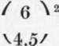

Lens Aperture
Description
This section is from the book "Airplane Photography", by Herbert E. Ives. Also available from Amazon: Airplane photography.
Lens Aperture
In the simple lens the aperture is merely the diameter. In compound lenses the aperture is not the linear opening but the effective opening of an internal diafram. Photographically, however, aperture has come to have a more extensive meaning. While in the telescope the actual diameter of an objective is perhaps the most important figure, and in the microscope the focal length, in photography the really important feature is the amount of light or illumination. This is determined by lens opening and focal length together; specifically, by the ratio of the lens area to the focal length. The common system of representing photographic lens aperture is by the ratio of focal length to lens diameter, the lens being assumed to be circular. Thus F/5 (often written F.5) indicates that the diameter is one-fifth the focal length.
Two points are to be constantly borne in mind in connection with this system of representation. First, all lenses of the same aperture (as so represented) give the same illumination of the plate (except for differences due to loss of light by absorption and reflection in the lens system).
This follows simply from the fact that the illumination of the plate is directly proportional to the square of the lens diameter, and inversely as the square of the focal length. Secondly, the illumination of the plate is inversely as the square of the numerical part of the expression for aperture. That is, lenses of aperture F/4.5 and F/6 give images of.
What lens aperture, and therefore what image brightness, is feasible, is determined chiefly by the angular field that must be covered with any given excellence of definition. The largest aperture ordinarily used for work requiring good definition and flat field free from distortion is F/4.5. An-astigmatic lenses of this aperture cover an angle of 16° to 18° from the axis satisfactorily, which corresponds to an 18X24 centimeter plate with a lens of 50 centimeters focus. Lenses with aperture as large as F/3.5 were used to some extent in German hand cameras of 25 centimeters focal length, with plates of 9X12 centimeters. English and American lenses of this latter focal length were commonly of aperture F/4.5, designed to cover a 4X5 inch plate.
As a general rule the greater the focal length the smaller the aperture—a relationship primarily due to the difficulty of securing optical glass in large pieces. Thus while 50 centimeter lenses of aperture F/4.5 are reasonably easy to manufacture, the practicable aperture for quantity production is F/6, and for 120 centimeter lenses, F/10. This means that a very great sacrifice of illumination must be faced to secure these greater focal lengths. As is to be expected from the state of the optical glass industry, the German lenses were of generally larger aperture for the same focal lengths than were those of the Allies. Besides the F/3.5 lenses already mentioned, their 50 centimeter lenses relative brightness I — ) = 1.78. were commonly of aperture F/4.8, their 120 centimeter lenses of aperture F/7, or of about double the illuminating power of the French lenses of the same size.
Demands for large covering power also result in smaller aperture. The 26 centimeter lenses used on French hand cameras utilizing 13X18 centimeter plates were commonly of aperture F/6orF/5.6. The lens of largest covering power decided on for use in the American service was of 12 inch focus, to be used with an 18X24 centimeter plate (extreme angle 26°); the largest satisfactory aperture for this lens is F/5.6.
Ordinarily the question of aperture is closely connected with that of diaframs, whereby the lens aperture may be reduced at will. Diaframs have been very little used in aerial photography. All the aperture that can be obtained and more is needed to secure adequate photographic action with the short exposures required under the conditions of rapid motion and vibration peculiar to the airplane. Any excess of light, over the minimum necessary to secure proper photographic action, is far better offset by increase of shutter speed or by introduction of a color filter. For this reason American aerial lenses were made without diaframs. In the German cameras, however, adjustable diaframs are provided (Fig. 43), controlled from the top of the camera by a rack and pinion. In the camera most used in the Italian service an adjustable diafram is provided, but this is occasioned by the employment of a between-the-lens shutter of fixed speed, so that the only way exposure can be regulated is by aperture variation, a method which has little to recommend it.

Fig. 43. - Diagram of German 50 centimeter camera.
Continue to:
- prev: Lens Testing And Tolerances For Aerial Work
- Table of Contents
- next: The Question Of Focal Length
Tags
camera, lens, airplane, aerial, film, exposure, photography, maps, birdseye